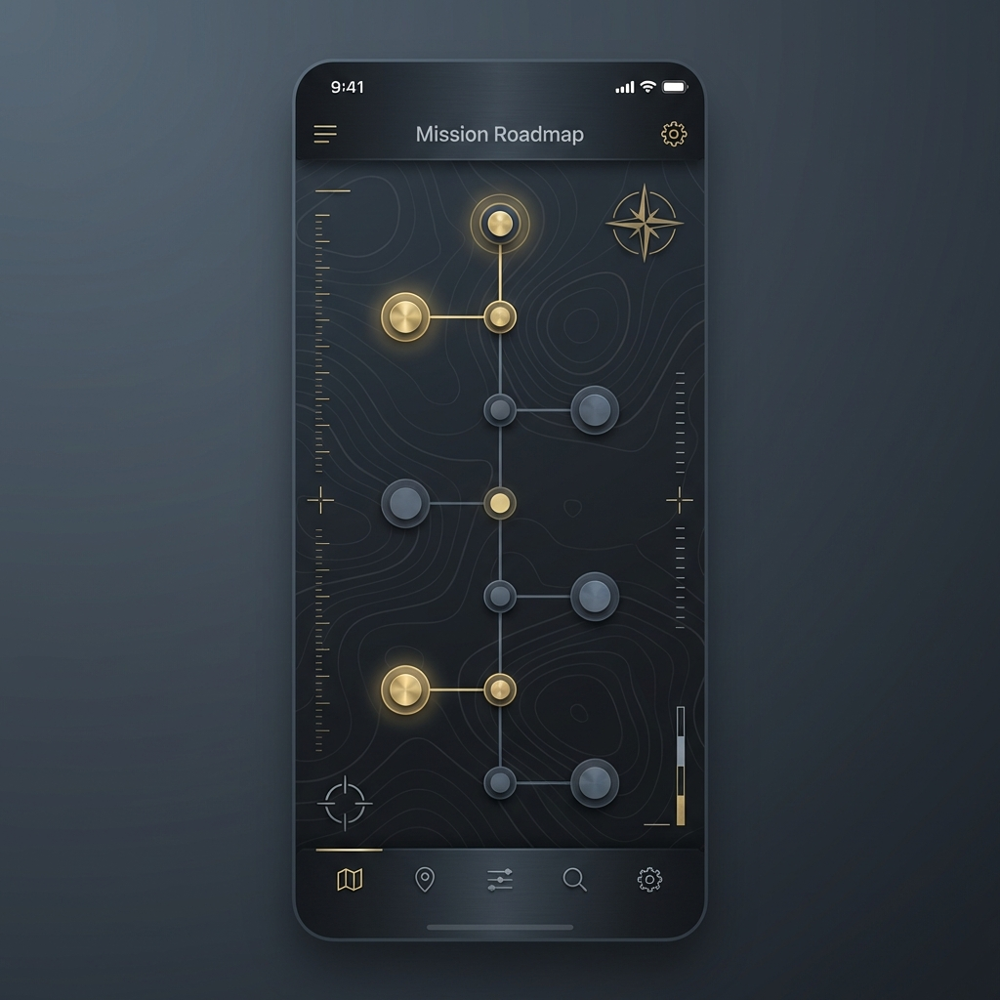

Capturing
the Signal
We translate raw institutional knowledge into high-stakes strategic narratives that drive operational clarity.
Extracting Value from Noise
Most organizations suffer from a "Narrative Gap"—the distance between what they do and how they describe it. We apply **Story Forensics** to bridge that divide.
- → Linguistic analysis of primary source interviews.
- → Identification of high-value structural constraints.
- → Distillation of complex systems into actionable clarity.
Architecture of Authority
The Strategic Brief is not a document; it is a **Mission-Critical Asset**. It serves as the single source of truth for leadership, partners, and the market.
Module A // The Throughline
A singular, aggressive reframing of identity that shifts the client from commodity to infrastructure.
Module B // Strategic Path
Identifying the mechanical 'How' that enables the mission to succeed where others fail.
Tactical Execution
We don't deliver advice; we deliver **Roadmaps**. Every brief concludes with a phased, 18-month plan to realize the new narrative.
Immersion
Deep-dive forensics into state and vision.
Calibration
Operationalizing the narrative through policy.

Ready to map
your
mission?
Capture the signal before the noise takes over.
Initiate Extraction